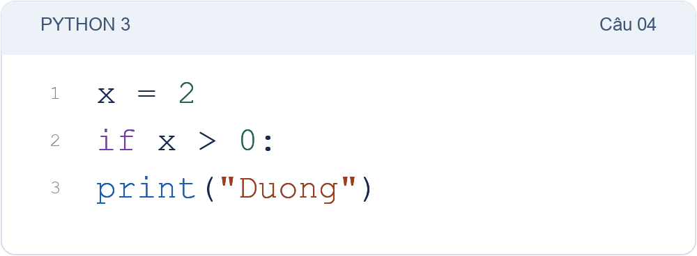
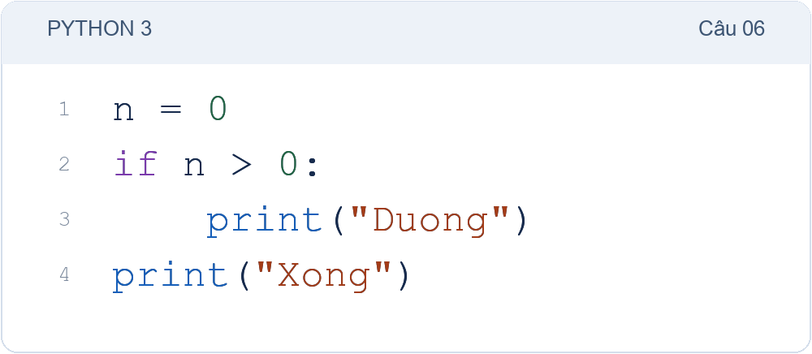
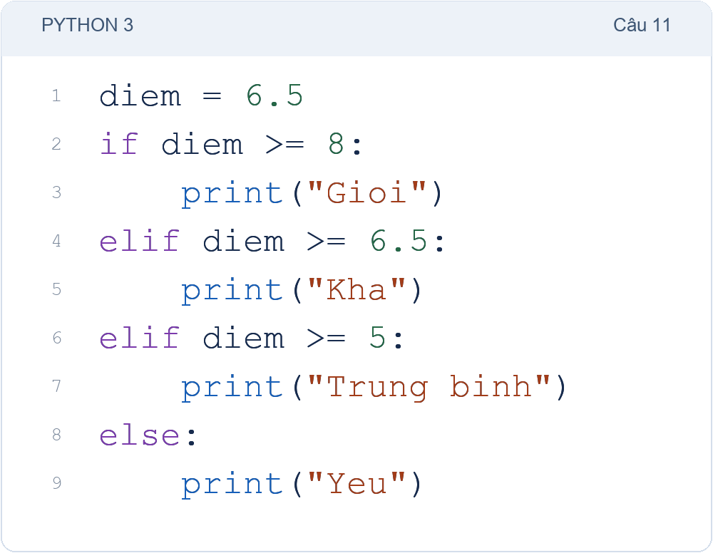
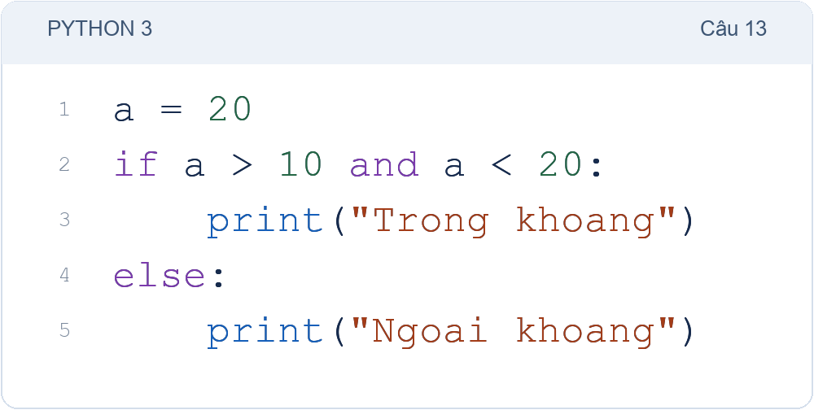
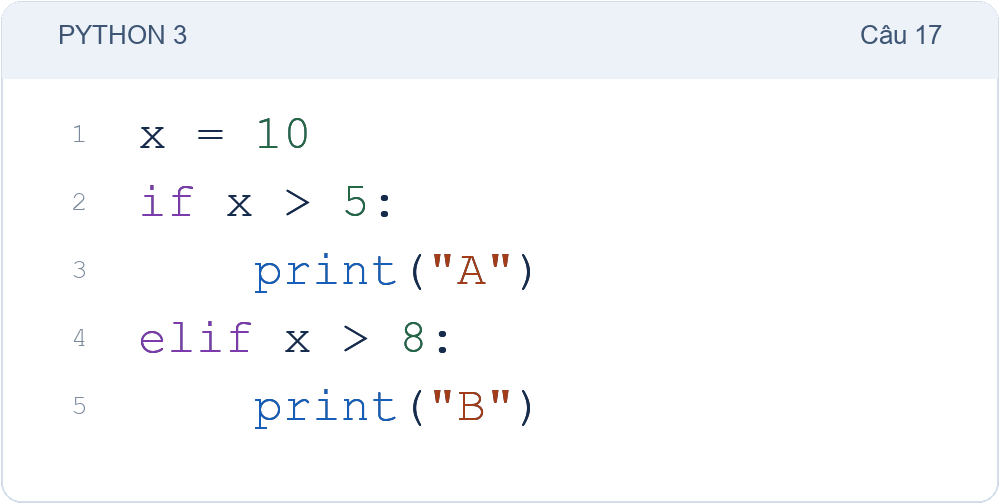
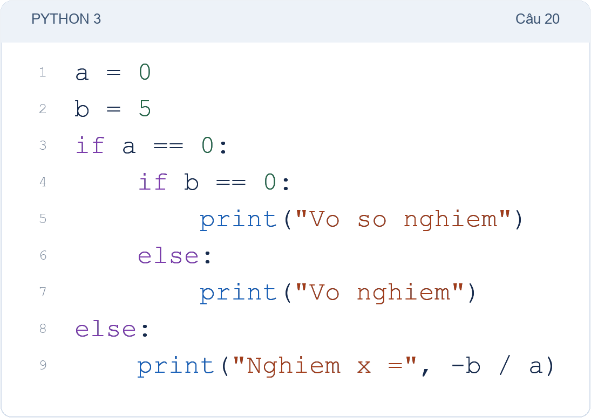

Gắn ảnh code vào bộ trắc nghiệm Wayground
11 ảnh giữ đúng xuống dòng, căn trái và khoảng trắng. Mỗi ảnh mang số câu tương ứng trong bộ đề 20 câu đã gửi.
Sửa ngay bộ đề đang có
- Giải nén toàn bộ gói này. Mở câu hỏi tương ứng trong trình chỉnh sửa Wayground.
- Ở phần nội dung câu hỏi, xóa riêng đoạn code dạng văn bản; giữ nguyên lời hỏi, các lựa chọn, đáp án và giải thích.
- Bấm biểu tượng hình ảnh trong phần câu hỏi, chọn tải ảnh từ máy và chọn đúng file trong thư mục Anh_code. Ví dụ: câu 4 dùng Cau_04_code.png.
- Lưu câu hỏi, xem trước bằng chế độ học sinh. Nếu ảnh bị thu nhỏ, thử bố cục dọc nếu tài khoản có tùy chọn này. Kiểm tra thêm trên màn hình học sinh sẽ dùng.
- Lặp lại cho các câu 4, 6, 8, 9, 10, 11, 13, 16, 17, 18 và 20. Chín câu còn lại không cần gắn ảnh.
Giữ nguyên mã cố ý sai: Câu 4 thiếu thụt lề ở dòng 3; câu 8 dùng dấu = trong điều kiện. Không sửa các lỗi này vì đó là nội dung đang được hỏi.
Không cần nhập lại Excel hay tạo bộ đề mới. Các ảnh này chưa được gắn vào tài khoản Wayground của bạn.
Ảnh nằm trên máy không thể tự được Wayground lấy qua cột Image Link trong Excel. Muốn tự nhập ảnh qua cột đó cần URL ảnh truy cập được từ Internet. Gói này dùng cách tải ảnh trực tiếp khi sửa từng câu.
Câu 04
Đoạn mã báo loại lỗi cụ thể nào do thiếu thụt lề sau if?
Ảnh cần gắn: Cau_04_code.png

Mã gốc để đối chiếu
x = 2
if x > 0:
print("Duong")Câu 06
Chương trình in ra những gì, theo đúng thứ tự? Dấu / trong phương án biểu thị xuống dòng.
Ảnh cần gắn: Cau_06_code.png

Mã gốc để đối chiếu
n = 0
if n > 0:
print("Duong")
print("Xong")Câu 08
Cần thay đúng một ký hiệu nào để mã kiểm tra x bằng 10 và chạy được?
Ảnh cần gắn: Cau_08_code.png

Mã gốc để đối chiếu
x = 10
if x = 10:
print("Bang 10")Câu 09
Chương trình in ra gì?
Ảnh cần gắn: Cau_09_code.png

Mã gốc để đối chiếu
n = -7
if n % 2 == 0:
print("So chan")
else:
print("So le")Câu 10
Theo quy tắc giả định: điểm ≥ 8 là Gioi, 6.5 ≤ điểm < 8 là Kha. Đoạn mã phân loại sai điểm 9. Cách sửa nào đúng cho cả hai khoảng?
Ảnh cần gắn: Cau_10_code.png

Mã gốc để đối chiếu
diem = 9
if diem >= 6.5:
print("Kha")
elif diem >= 8:
print("Gioi")Câu 11
Với quy tắc giả định trong mã, điểm đúng bằng 6.5 được xếp vào nhóm nào?
Ảnh cần gắn: Cau_11_code.png

Mã gốc để đối chiếu
diem = 6.5
if diem >= 8:
print("Gioi")
elif diem >= 6.5:
print("Kha")
elif diem >= 5:
print("Trung binh")
else:
print("Yeu")Câu 13
Chương trình in ra gì khi a đúng bằng 20?
Ảnh cần gắn: Cau_13_code.png

Mã gốc để đối chiếu
a = 20
if a > 10 and a < 20:
print("Trong khoang")
else:
print("Ngoai khoang")Câu 16
Chương trình in ra gì? Dấu / biểu thị xuống dòng.
Ảnh cần gắn: Cau_16_code.png

Mã gốc để đối chiếu
x = 10
if x > 5:
print("A")
if x > 8:
print("B")Câu 17
Chương trình in ra gì?
Ảnh cần gắn: Cau_17_code.png

Mã gốc để đối chiếu
x = 10
if x > 5:
print("A")
elif x > 8:
print("B")Câu 18
Câu lệnh dưới đây in ra gì?
Ảnh cần gắn: Cau_18_code.png

Mã gốc để đối chiếu
print(5 >= 5 and 5 != 0)
Câu 20
Chương trình in ra gì khi a = 0 và b = 5?
Ảnh cần gắn: Cau_20_code.png

Mã gốc để đối chiếu
a = 0
b = 5
if a == 0:
if b == 0:
print("Vo so nghiem")
else:
print("Vo nghiem")
else:
print("Nghiem x =", -b / a)